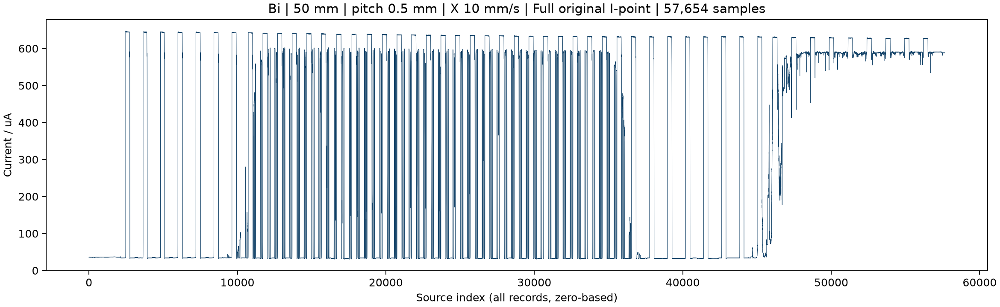
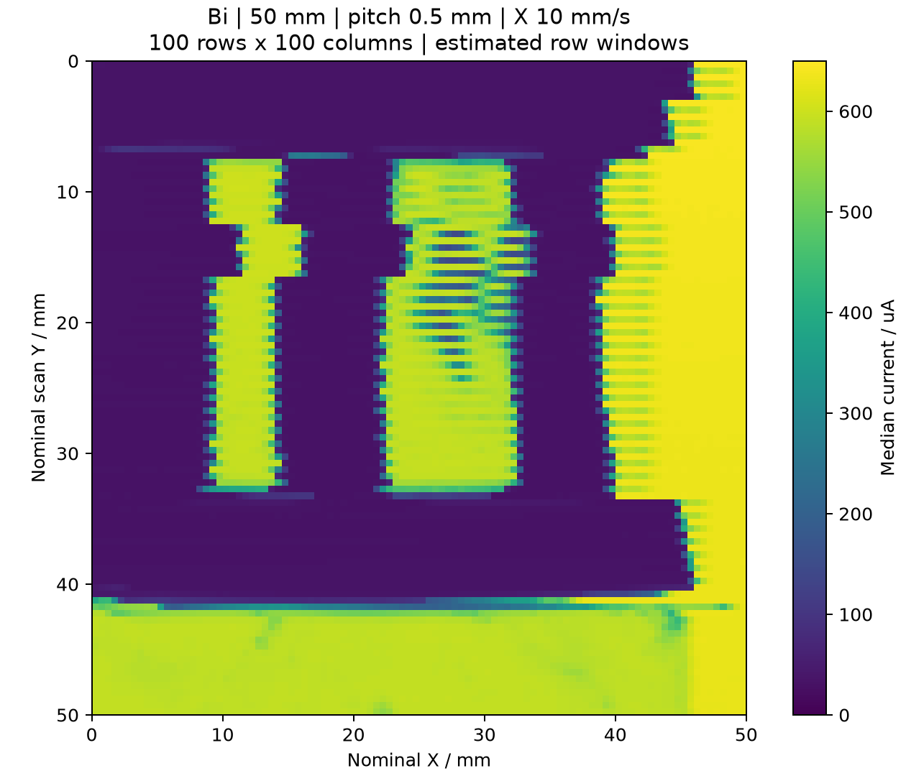
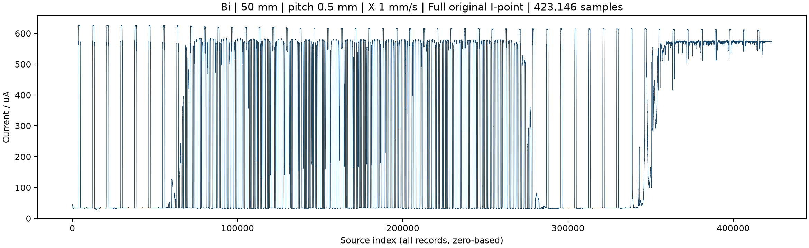
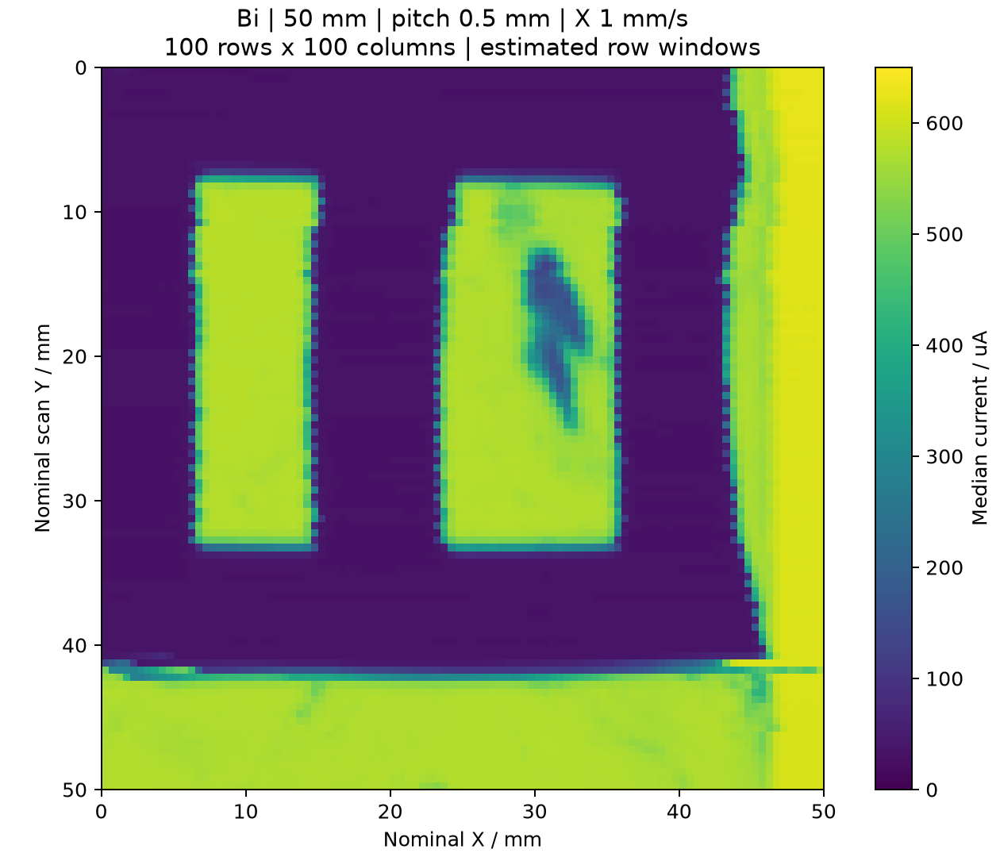
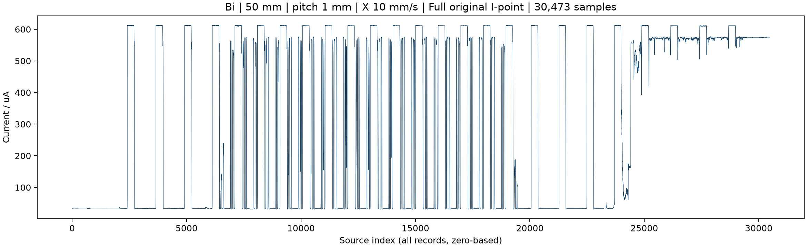
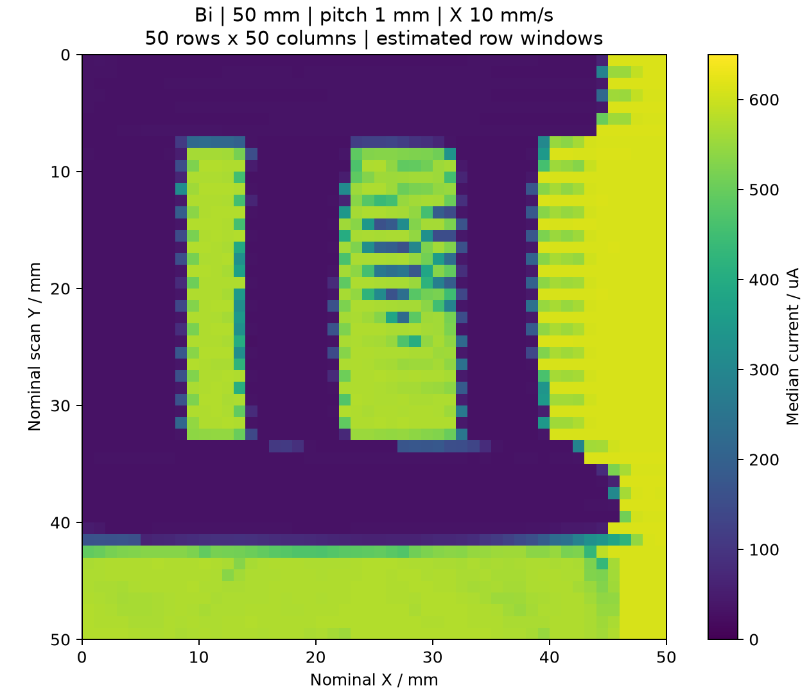
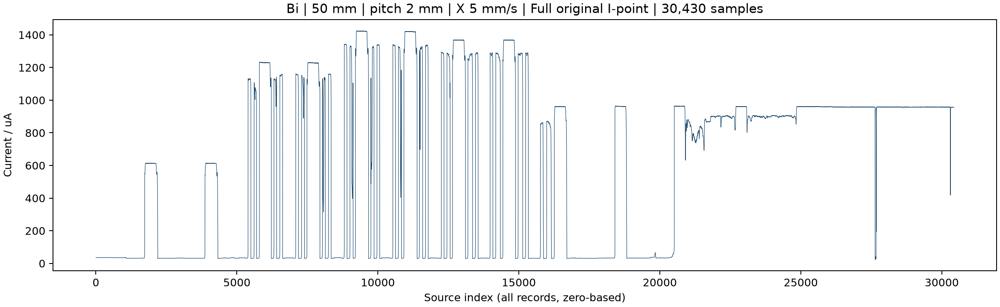
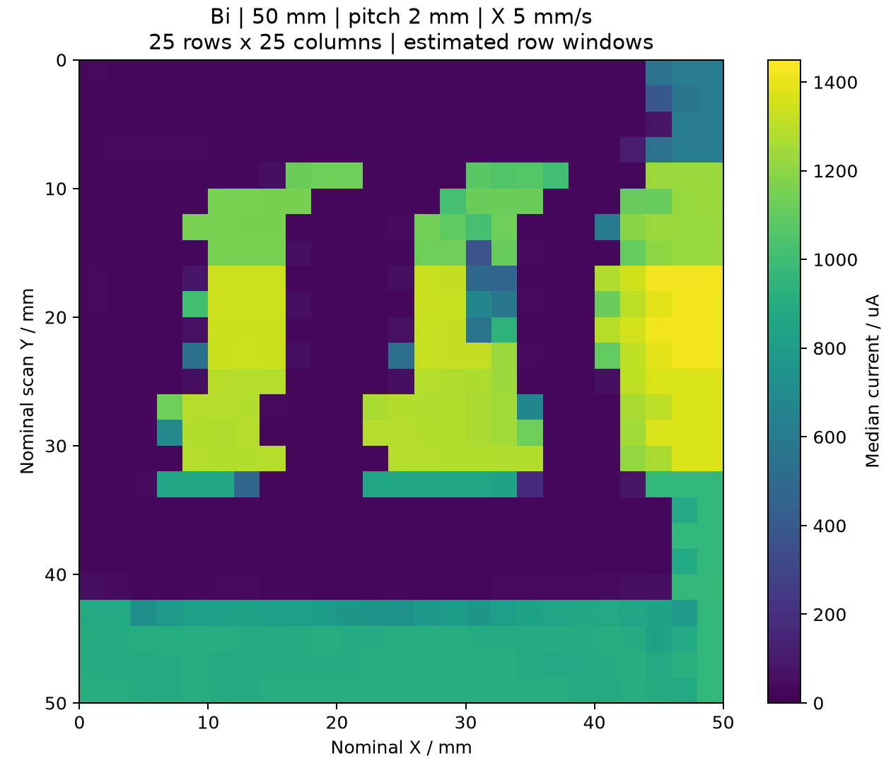
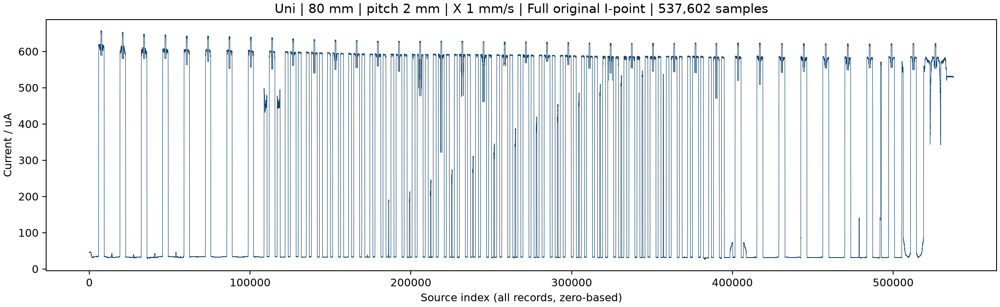
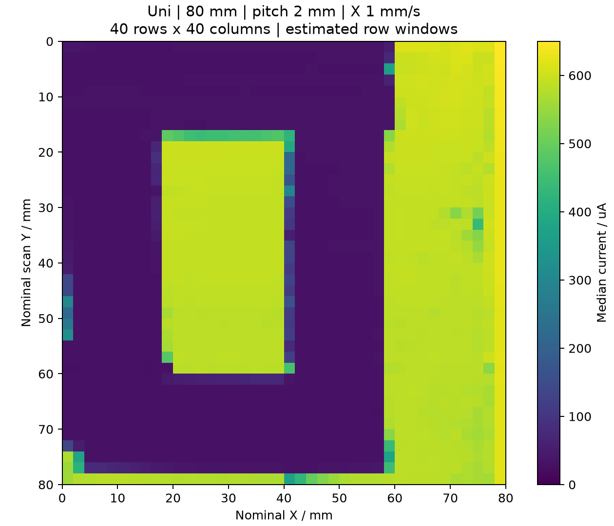

全量原始数据、连续色标、逐像素对应。行窗口根据电流重复结构估计，尚无位置或运动事件同步记录。普通四组统一0–650 μA色标，梯度组0–1450 μA。请先看完整波形，再看二维图。
双向；范围50×50 mm；行距0.5 mm；X设定10 mm/s，旧程序Y同速；100行；原始57,654点。


两个窗口可辨识，但窗口边缘及右窗口出现交替条纹，左窗口上部也有位移或形变。
名义像素更细并不保证有效分辨率更高。每像素只有3–5点，运动/响应迟滞、采样不均匀和分行相位都可能放大行间差异。用户报告此配置机械振动较大且Y换行过快。
打开像素与原始数据交互图双向；范围50×50 mm；行距0.5 mm；X设定1 mm/s，旧程序Y同速；100行；原始423,146点。


两个透光窗口和中央遮光条可辨识，窗口轮廓整体连贯；右窗口上半部存在局部电流下降。
与同0.5 mm行距的10 mm/s组相比，单像素采样更多、条纹较轻。局部暗斑可能涉及遮挡、光路或电流响应，不可仅凭图像判为电机故障。
打开像素与原始数据交互图双向；范围50×50 mm；行距1 mm；X设定10 mm/s，旧程序Y同速；50行；原始30,473点。


仍能辨识两个窗口及遮光条；像素格更明显，右窗口仍存在横向条纹。
相较0.5 mm行距，扫描行数减半，耗时约减半；每像素点数增加，但Y方向采样更稀。不能把格子尺寸直接写成器件实测空间分辨率。
打开像素与原始数据交互图双向；范围50×50 mm；行距2 mm；X设定5 mm/s，旧程序Y同速；25行；原始30,430点。


原始电流呈现多级幅值，重构保留了窗口内及掩模外的颜色层次；粗行距与奇偶行偏移使边缘呈阶梯形。
光强顺序为20%→40%→60%→50%→30%，这是时间调制映射到空间，不是样品静态透过率图。记录没有切换时间标记，不把每一行强行指定为某个百分比，也不能由此拟合光功率线性响应。
打开像素与原始数据交互图单向；范围80×80 mm；行距2 mm；X设定1 mm/s，旧程序Y同速；40行；原始537,602点。


80 mm掩模的主要矩形透光区可辨识，图像主体较连贯；右侧和底部亮区包含掩模外透光区域。
证明单向路径可以完成连续电流成像。与50 mm双窗口样品不构成严格单向/双向性能对照，不能据此量化回差改善。严格对照仍需同一样品、范围、速度、行距及光路。
打开像素与原始数据交互图